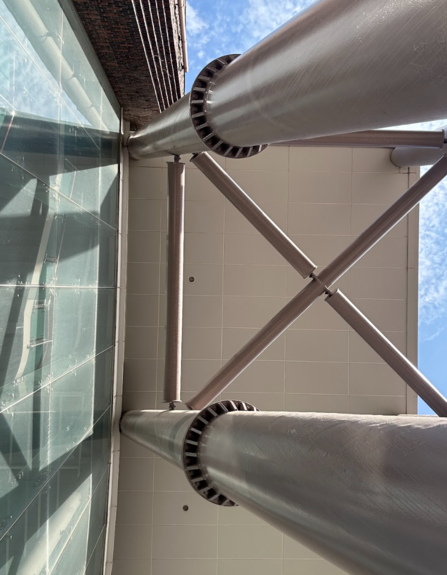
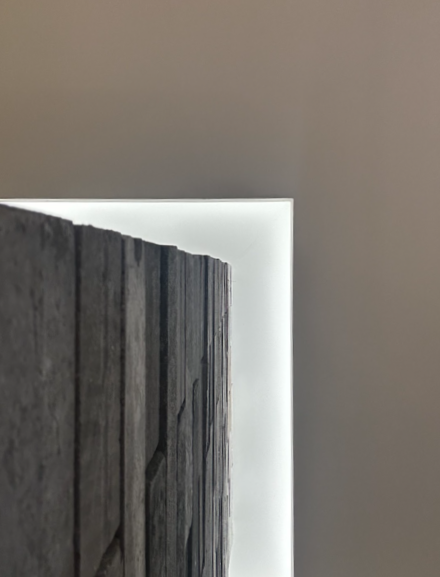
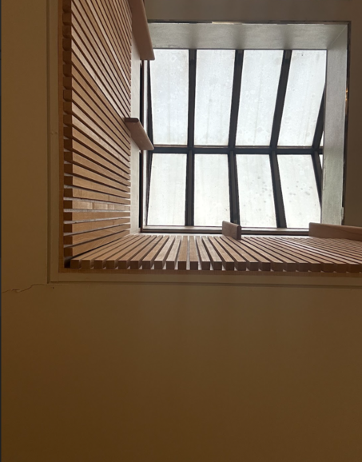
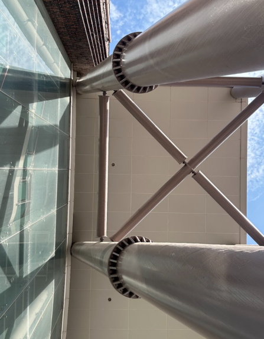
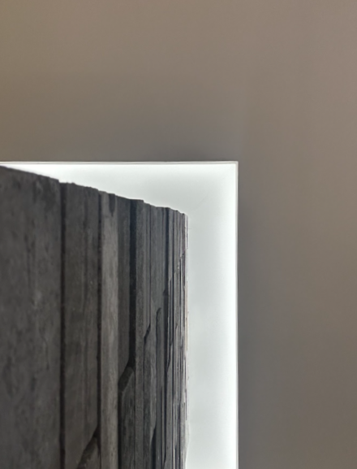
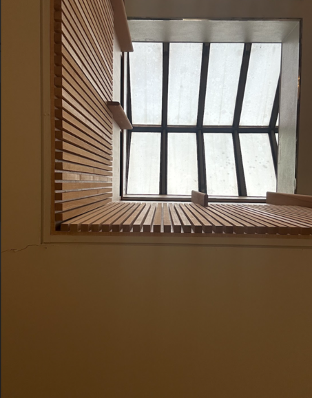
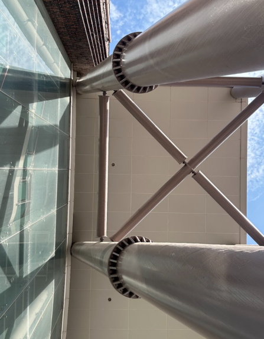
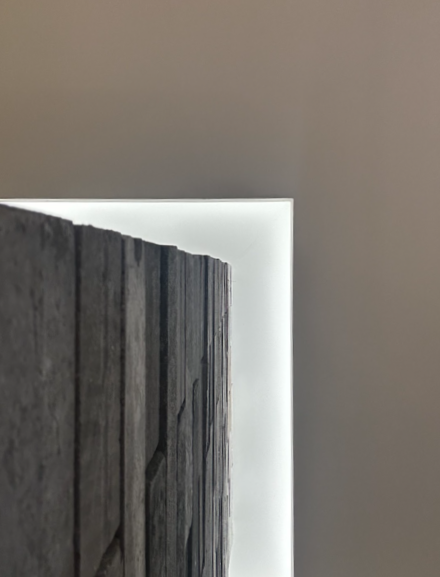
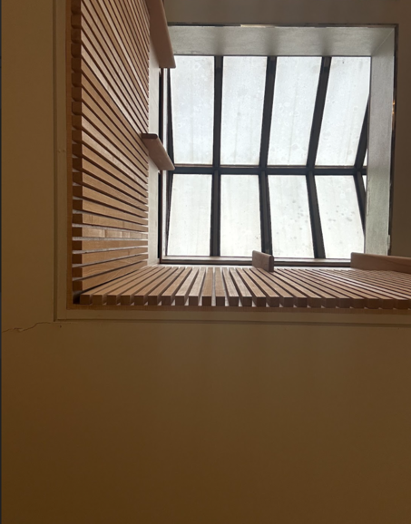

공간은 사물의 시각적인 깊이와 거리와 움직임을 나타내는 방법으로 중요하게 사용된다.
2차원의 예술 작품에서 공간의 깊이를 나타내기 위해 중첩, 공기 원근법, 선 원근법 사용하게 된다.
중첩은 앞, 뒤 사물을 겹쳐서 깊이를 표현하는 것으로 가장 자주 사용되며, 공기 원근법은 근경과 원경의 선명도 차이를 내서 표현하는 방식이다.
투시라고 보통 이야기하는 선 원근법은 근경에서 원경까지 크기를 작아지게 하여 표현하는 방식으로 소실점의 개 수에 따라 1점 투시법, 2점 투시법, 3점 투시법으로 구분한다.


